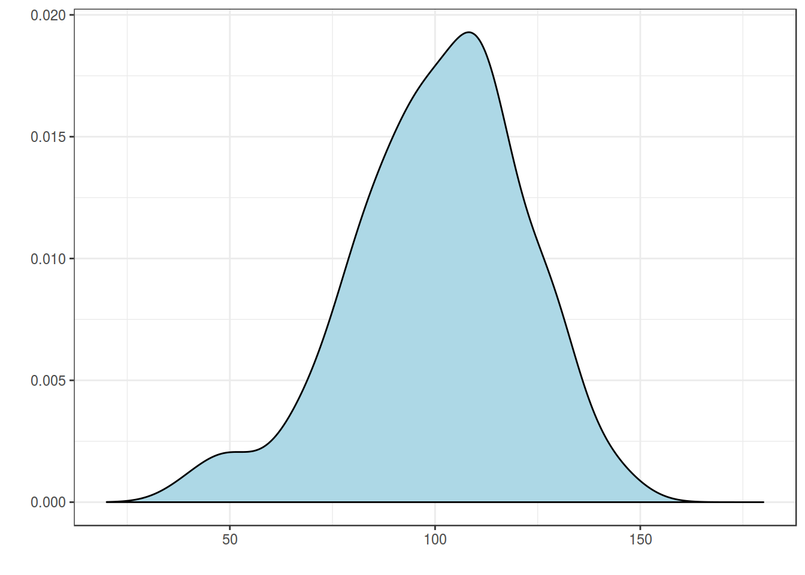
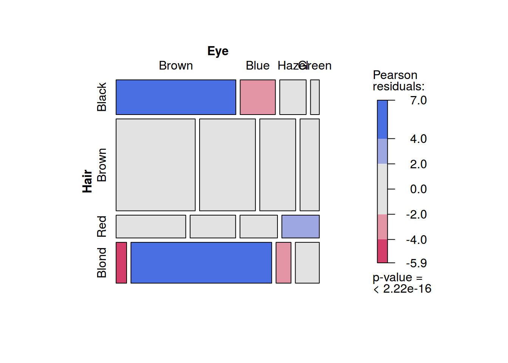
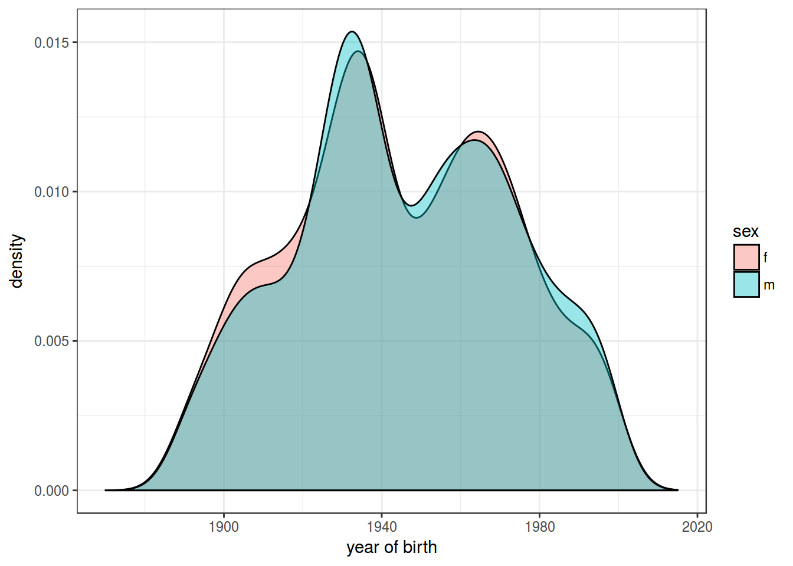

- Empirical Bayes Estimation
O. Lyashevskaya, G. Moroz, I. Schurov
1. Probability destribution
- A probability value must be nonnegative.
- The sum of the probabilities across all events in the entire sample space must be 1.
- For any two mutually exclusive events, the probability that one or the other occurs is the sum of their individual probabilities.
Discrete case:
\[p(⚀) + p(⚁) + p(⚂) + p(⚃) + p(⚄) + p(⚅) = \sum_{i = 0}^{n} p(x_i) = 1\]
Continuouse case:
 \[ = \int p(x)dx = 1\]
2. Two-way destribution
Joint probability
\[p(A, B) = p(B, A)\]
Conditional probability
\[p(B|A) = p(A, B)/P(A)\]
Discrete case:
- joint probability: probability of having blue eyesand blond hair: \[p(Hair = Blond, Eye = Blue) = p(Eye = Blue, Hair = Blond) = 0.16\]
- conditional probability: probability of having blond hair, if eyes are blue: \[p(Hair = Blond|Eye = Blue) = \frac{p(Eye = Blue, Hair = Blond)}{\sum_{i=1}^{n} p(Eye = Blue, Hair = x_i)} = \frac{0.16}{0.36} \approx 0.45\]
Continuouse case:

- joint probability: probability of having blue eyesand blond hair: \[p(sex = f, year = 1945) = p(year = 1945, sex = f)\]
- conditional probability: probability of having blond hair, if eyes are blue: \[p(year = 1945|sex = f) = \frac{p(sex = f, year = 1945)}{\int p(sex = f, year = x)dx}\]
3. Bayes rule
\[p(A|B) = \frac{p(A, B)}{p(B)}\Rightarrow p(A|B) \times p(B) = p(A, B)\] \[p(B|A) = \frac{p(B, A)}{p(A)}\Rightarrow p(B|A) \times p(A) = p(B, A)\] \[p(A|B) \times p(B) = p(B|A) \times p(A)\] \[p(A|B) = \frac{p(B|A)p(A)}{p(B)}\] \[p(A|B) = \frac{p(B|A)p(A)}{\sum_{i=1}^{n} p(B, a_i) \times p(a_i)}\]4. Bayes inference
5. How stop afraid to choose a prior?
6. Empirical Bayes Estimation